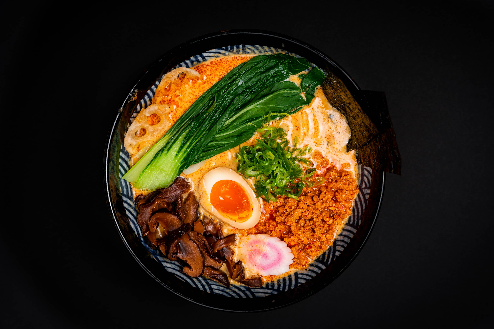
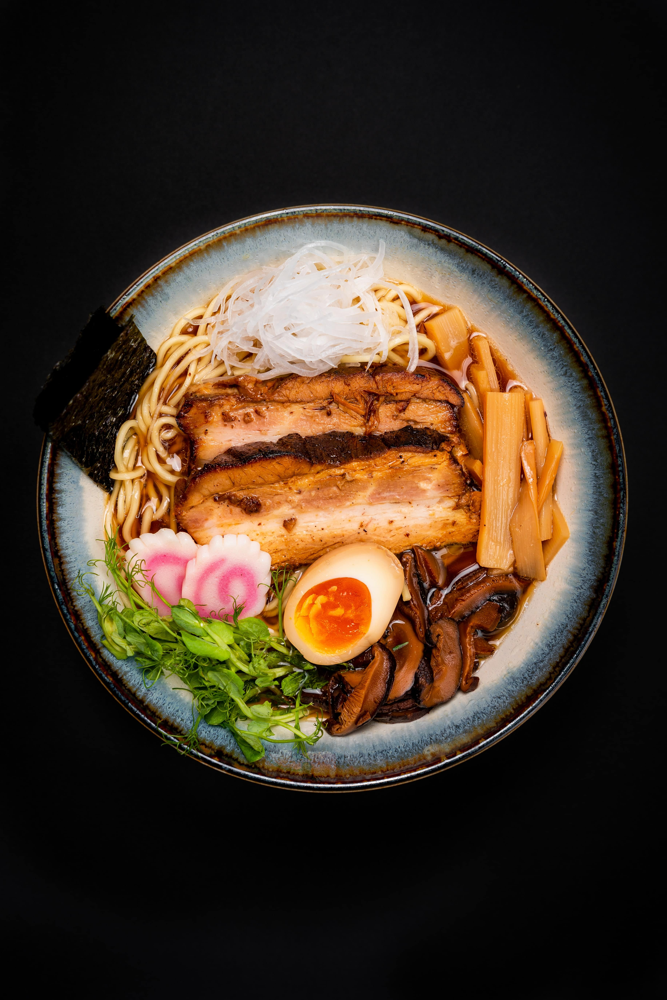
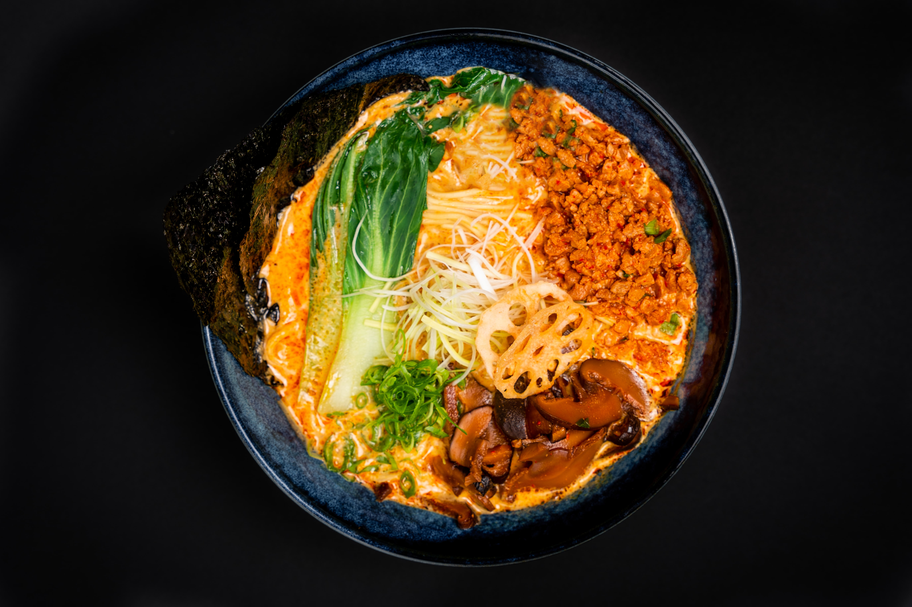
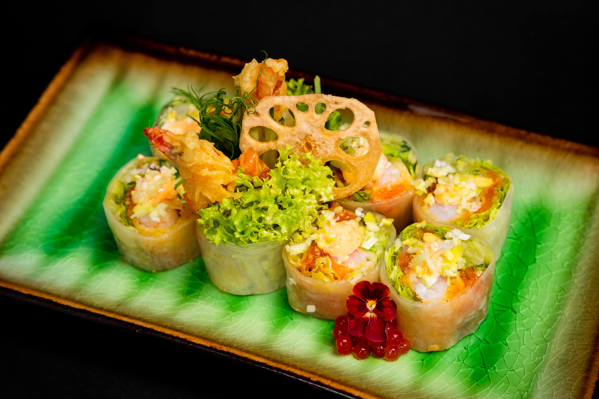
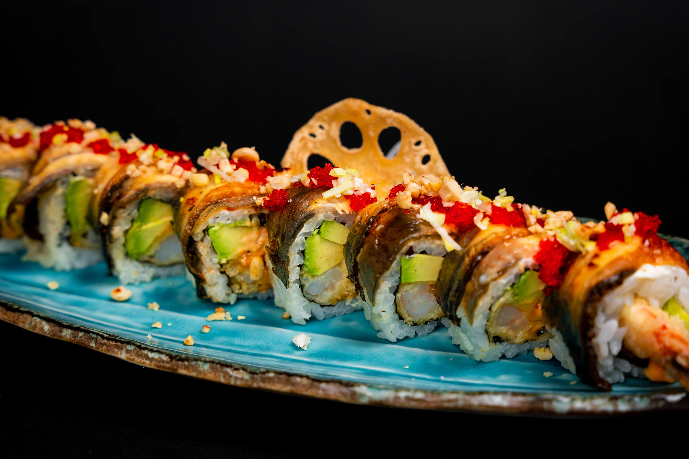
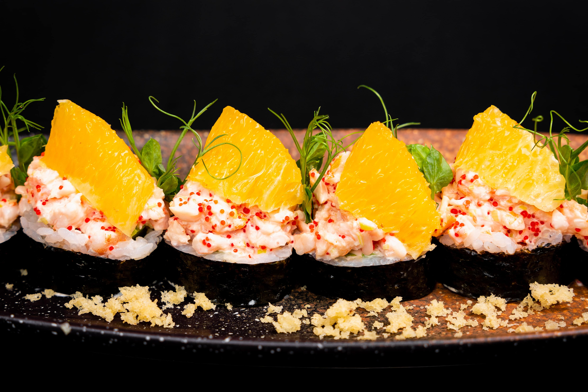
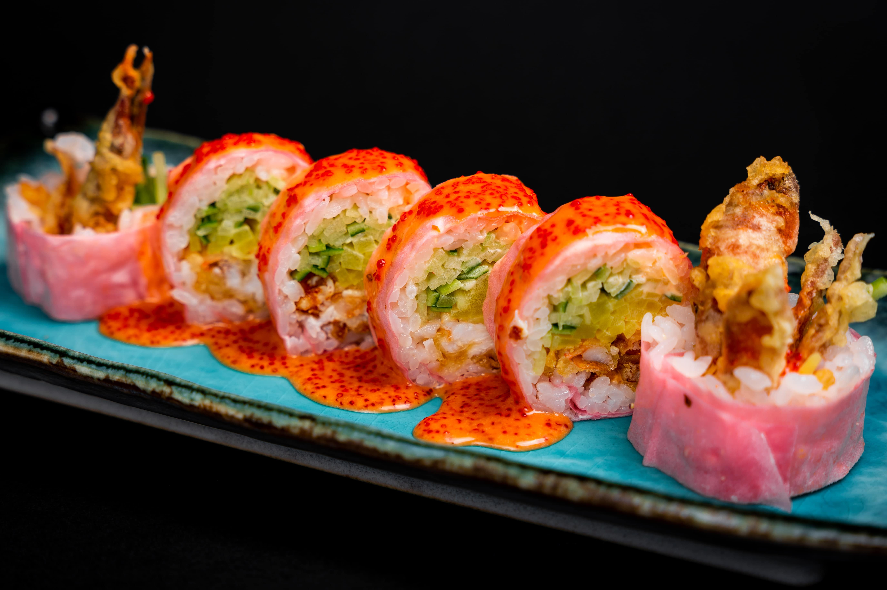
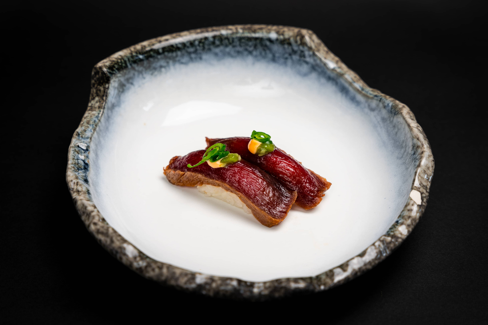

O nas
W starożytnej Japonii na wszystkich talerzach usypywano niewielki kopczyk soli, aby każdy
gość przy stole mógł sam doprawić sobie jedzenie. Koncepcja solenia własnego pożywienia -
teshio ni kakeru- z czasem ewoluowała i zaczęła oznaczać "czyn pielęgnowania", czy to
wychowania dziecka, sporządzania własnej pasty Miso, czy w naszym przypadku gotowania dla
ludzi, którym chcemy zaoferować wiedzę, umiejętności i pasję do stworzenia wyjątkowego
posiłku.
Shoyu - czyli sos sojowy, to jeden z najbardziej rozpoznawalnych symboli kuchni japońskiej.
Zaraz obok stoją: Sake, Mirin, Shio (sól), Su (ocet), Sato (cukier), Miso, Yuzu, Goma
(sezam), Shoga (imbir). Dzięki nim marynujemy i solimy ryby, dodajemy głębi bulionom oraz
doprawiamy ryż do su-shi (Ocet i Sól). Te wszystkie składniki i ich kombinacje w połączeniu
z wiedzą i nutą nowoczesności pragniemy pokazać Ci na talerzu i w misce.
Do zobaczenia !
galeria
- 
- 
- 
- 
- 
- 
- 
- 